1. アプリの目的
CFS Appは、ホテル客室などのルームタイプ単位で、照明回路とLutron/GRMS系デバイスの関係を整理し、 シーン、スイッチ、コマンド、バックライト、HVACを一つのCFS表にまとめるためのWebアプリです。
最終的なゴールは、CFSタブで統合表を確認し、Excel Exportで提出・共有できる状態にすることです。 そのため、各タブは単独の入力画面ではなく、CFSに表示される情報を作るための入口として考えます。
Reserved は未使用枠、Uneffected はシーンで影響させない値です。
どちらもCFSの意味に関わるため、単なる空欄とは扱いません。
2. ロール別の見方
プロジェクト管理者 / PM
プロジェクト作成、共有、Revision管理、最終Excel出力、マスター設定の管理を担当します。
主に見る画面: Project Selection、Settings、Revision Management、CFS。
照明設計担当
Area、Fixture、Circuit、Area Sceneを整備し、回路番号、器具数量、VA、Detailを正しく登録します。
主に見る画面: Area、Fixture、Circuit、Area Scene、PDUのFixture VA。
制御 / Lutron担当
Device Assign、Switch、Command、Backlightを登録し、実際の制御ロジックに沿ってCFS列を作ります。
主に見る画面: PDU、Device Assign、Switch、Command、Backlight、CFS。
HVAC担当 / レビュー担当
HVAC、TSTAT、季節スケジュール、CFS反映、PDU/VAの整合性を確認します。
主に見る画面: Device AssignのHVAC、Area Scene/SceneのHVAC、PDU、CFS。
3. 起動とショートカット
通常はデスクトップの CFS App ショートカットから起動します。
起動後、ブラウザで http://localhost:3000 が開きます。
- デスクトップの
CFS Appをダブルクリックします。 - 初回のみ依存関係のインストールが走る場合があります。完了まで待ちます。
- ブラウザが開き、Project Selection画面が表示されます。
ショートカットがない場合は、アプリフォルダ内の CREATE_DESKTOP_SHORTCUT.vbs を一度実行してください。
フォルダから直接起動する場合は LAUNCH_CFS_APP.vbs を使用します。
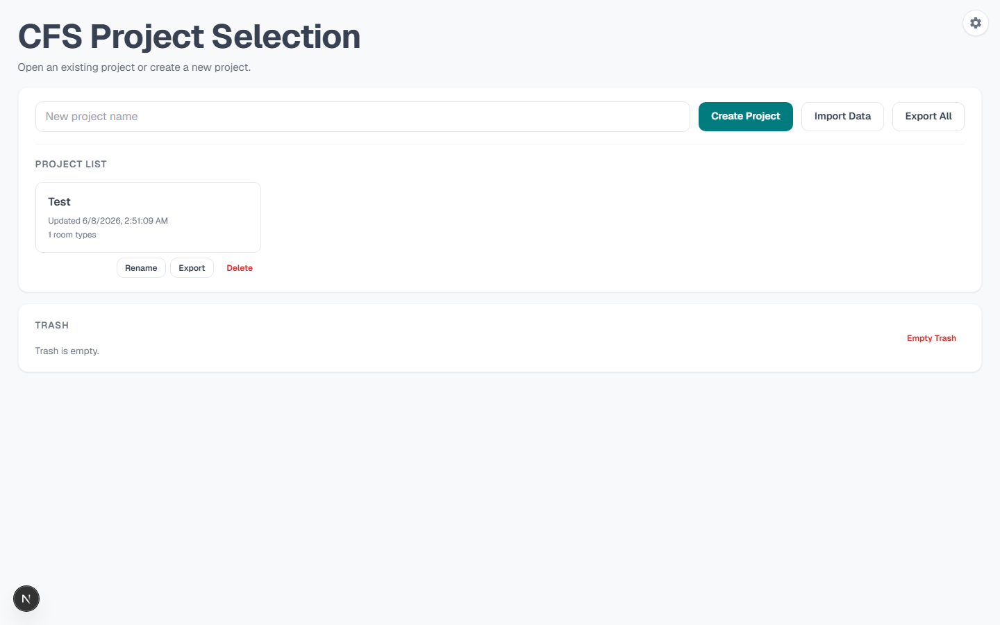
4. 推奨作業フロー
CFSを作成する場合、次の順番で入力するとリンク関係が分かりやすくなります。 PDUは後から確認するだけでなく、先にデバイス数量を決める入口としても使います。
5. 共通操作
タブとテーブル
- 上段タブは
Area、Fixture、Room Typeです。 Room Type内にPDU、Circuit、Device Assign、Area Scene、Scene、Switch、Command、Backlight、CFSがあります。+ Add Row、+ Add Device、Deleteアイコンで行を追加・削除します。Clearは入力を消します。シーン系ではUneffectedに戻す操作として使います。
Reserved / DALI / 表示切替
Show Reserved/Hide Reservedは未使用行の表示切替です。状態はタブ移動後も保持されます。- PDUのFixture VAでは、
Exclude DALI/Show DALIでDALI器具をVA集計から除外するか切り替えます。 - CFSでは
Areas、Devices、Base Columns、Function Columns、Display、Highlightsで表示列やハイライトを切り替えます。
キーボードとリスト
- セル移動は
Ctrl + 矢印キーを基準にしています。上下左右の同じ入力列へ移動するための操作です。 - リスト形式の選択肢は、開いた状態で矢印キー単独により候補移動できます。
- リスト外をクリックするとリストは閉じます。Settingオーバーレイは
Escでも閉じられます。
6. Project / Area / Fixture
Project Selection
プロジェクト単位でデータを管理します。新規作成、Import Data、Export All、個別Export、Trash管理を行います。
Area
Areaは回路やシーンの場所名です。Room Type内のCircuit、Area Scene、PIR登録などで使用されます。 Area Sceneに出ていない場所でもPIRが存在する可能性があるため、Area Masterとして正しく登録しておきます。
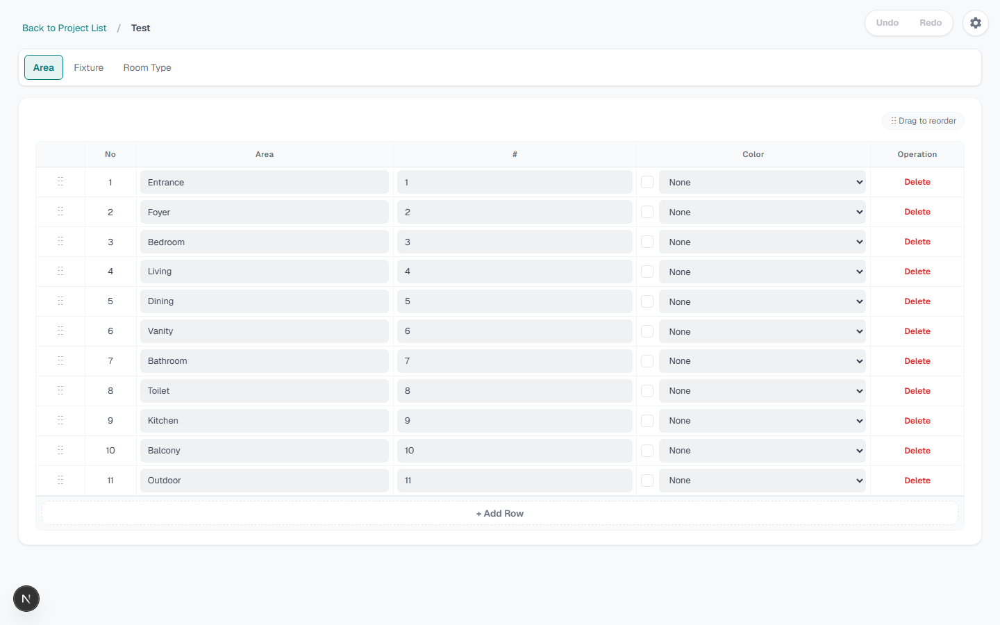
Fixture
Fixtureは照明器具マスターです。器具名、属性、VA、補正値などを登録します。 Circuitの器具選択、pcs、Total VA、PDUのFixture VA集計に使われます。
- Downlight系はpcsを
+1/-1で調整します。 - Indirect系は
+0.1/-0.1と+1/-1で調整できます。 - 補正値は共通設定として管理し、Fixture VA計算へ反映します。
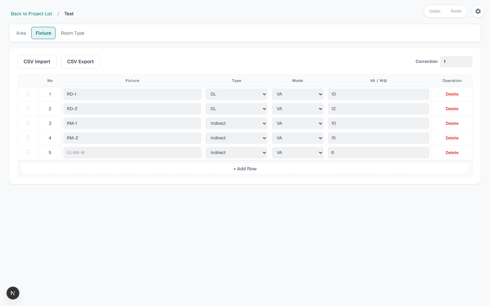
7. Room Type
Room Typeは、客室タイプごとのCFS入力単位です。A、B、Suiteなど、タイプごとに回路・スイッチ・シーンを分けて管理します。
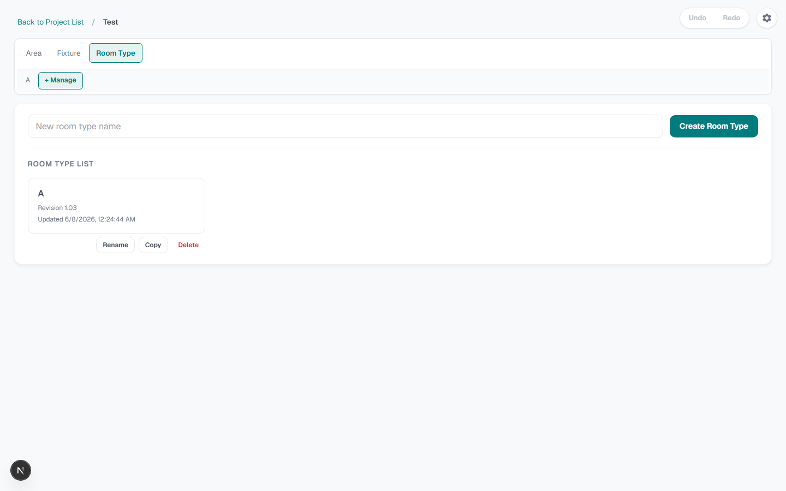
Room Typeを開くと、PDUからCFSまでのサブタブが表示されます。上部にはUndo/Redo、Revision、Draft状態、Save as New Revision、 Highlight Updates、Revision Managementがあります。
8. PDU
PDUタブは、LutronデバイスのPDU/VAと照明器具VAを統合して、電源容量とブレーカー数を確認する画面です。 今の構成では、PDUを先に登録して各タブへデバイス数量を反映させる入口として使います。
主な表示
Total PDU: Lutronデバイスの供給/消費PDU合計。0未満の場合は供給不足の警告が出ます。Fixture VA: CircuitとFixtureから集計した照明器具VA。Lutron Device VA: Device MasterのPDU/VA設定から計算したデバイスVA。+75などの供給側PDUは余りPDUには入りますが、消費VAには入れません。Combined VA: Fixture VAとLutron Device VAを合算した値。Correction: 補正値。計算に反映されます。Breaker: 必要ブレーカー数の目安です。
Qtyの意味
Device Assign: アドレス付きデバイスとしてDevice Assignへ反映されます。HVAC: TSTAT/HVAC系としてHVAC Assignmentへ反映されます。Switch: Palladiom、Pico、PIR、QSMなどSwitch系に反映されます。Manual: PDU計算用の手動数量として扱います。
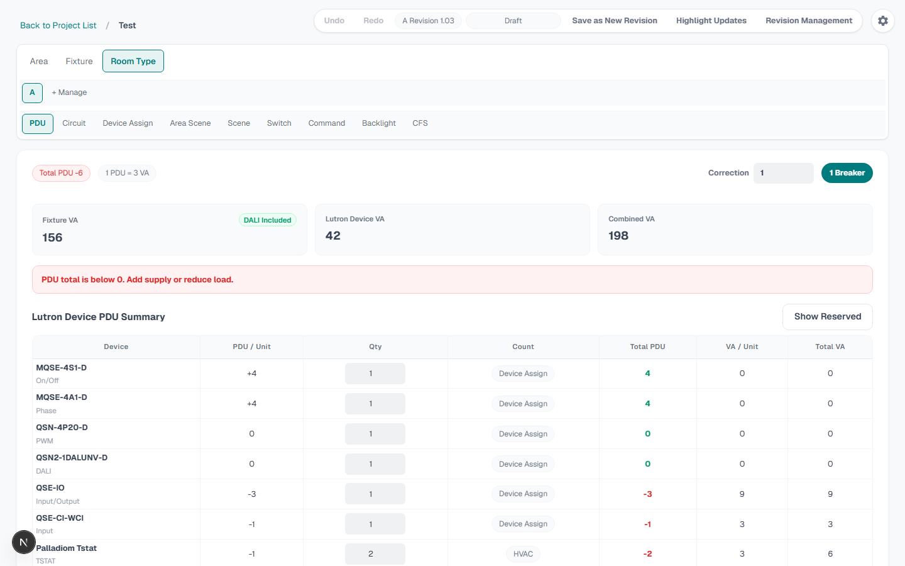
9. Circuit
Circuitタブは照明回路の基本情報を登録する画面です。CFSの行、Area Sceneの対象、Device Assignの回路紐づけの元になります。
主な入力項目
Designer #: 図面・設計上の回路番号です。Internal #: 内部管理番号です。auto表示のものは必要に応じて編集します。Dimming Type: Phase、On/Off、PWM、DALIなどを選択します。Area: Area Masterから選択します。Fixture/pcs.: 照明器具と数量を登録します。Detail: Bedroom Main、Entrance DLなどCFSで見える回路説明です。
1つの回路に複数の器具が入る場合は、回路の行がまとまって表示され、回路追加ボタンなどは視覚的に結合された見た目になります。 DALIはこの結合ルールの例外として扱います。
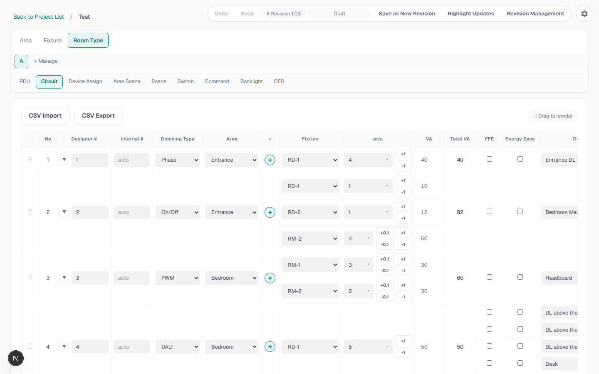
10. Device Assign / HVAC
Device Assignタブでは、Lutronデバイスを回路やゾーン/アドレスへ割り当てます。 アサイン済みCircuitは、リスト上でどの回路に紐づいているか分かるように表示されます。
- Device Assignで選べるのは、アドレス構成を持つデバイスです。PDU専用デバイスはここには出しません。
Reservedは未使用枠です。必要に応じてShow/Hideを切り替えます。- CCIのCircuit入力によるDetail自動入力は使用しません。Detailは明示的に入力・Clearします。
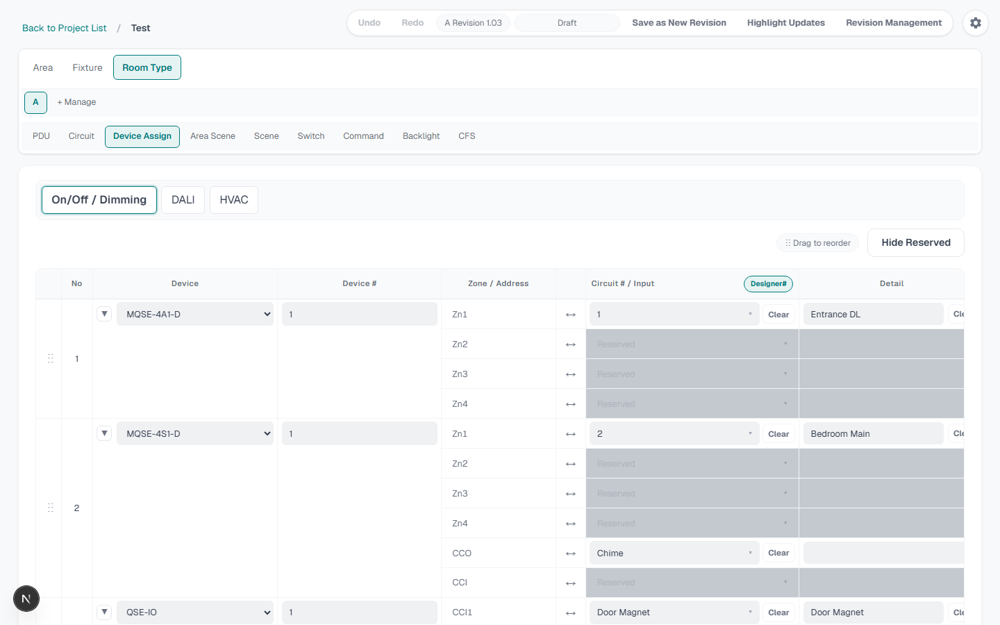
HVAC
HVACはDevice Assign内のHVACセクションで管理されます。TSTATはHVACの数量と連動し、各HVACにMaster/Slaveを設定できます。 Master/SlaveはCFSのGroup/Zone/Address表示に関係します。
Link all HVACを有効にすると、HVACの共通設定を一括で連動できます。- 季節スケジュールは開始日・終了日が連動します。行追加/削除後も日付がラップしないように自動調整されます。
- SceneやArea SceneのHVAC値は、CFSに反映されます。
11. Area Scene
Area Sceneタブは、Area単位のシーン値を登録する画面です。Welcome Day、Relax、Mood、Offなどのエリアシーンを作り、 LightingとHVACの値をまとめて定義します。
- LightingとHVACはそれぞれ最小化/展開できます。
- On/Off系はOn、Off、Blinking(Short)、Blinking(Long)、0.5 sec、Uneffectedを選びます。
- 調光値はInspectionModeの編集オーバーレイで調整し、InspectionMode終了時の確認で反映します。
- Clearは
Uneffectedに戻す操作です。 - Area Scene値を選んでもIndividual Overrideへ自動コピーしません。CFSではArea Sceneをベースにし、IndividualがあればIndividualを優先します。
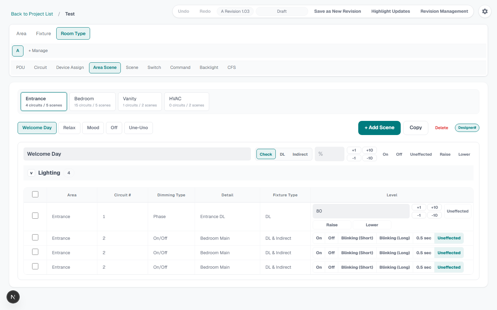
12. Scene / Setting
Sceneタブは、PMSやDoor Magnetなどのイベントに対して、どのシーン値・バックライト値を呼び出すかを登録する画面です。 Trigger ConditionはTrigger Masterから選択できますが、自由入力も可能です。
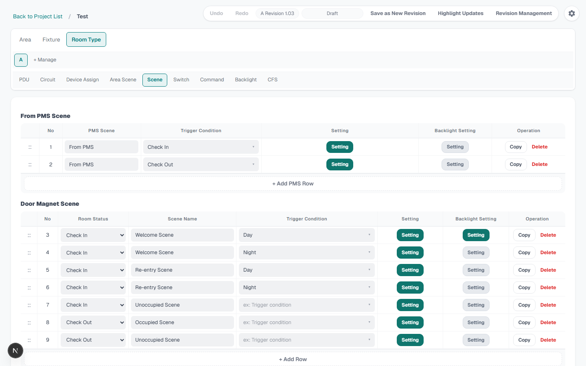
Settingオーバーレイ
Setting を押すと、画面手前に設定ウィンドウが表示され、背景は暗くなります。
左側でArea Sceneを呼び出し、右側のIndividual Overrideで差分だけ上書きします。
- Area Sceneを選択しただけではIndividual Overrideに値は入りません。
- Individual Overrideに値が入っているAreaは展開され、ボタン色も設定済みとして表示されます。
- Scene ValueとBacklightは同じオーバーレイ内で切り替えます。上側の位置は揃えています。
- EscまたはCloseで閉じます。
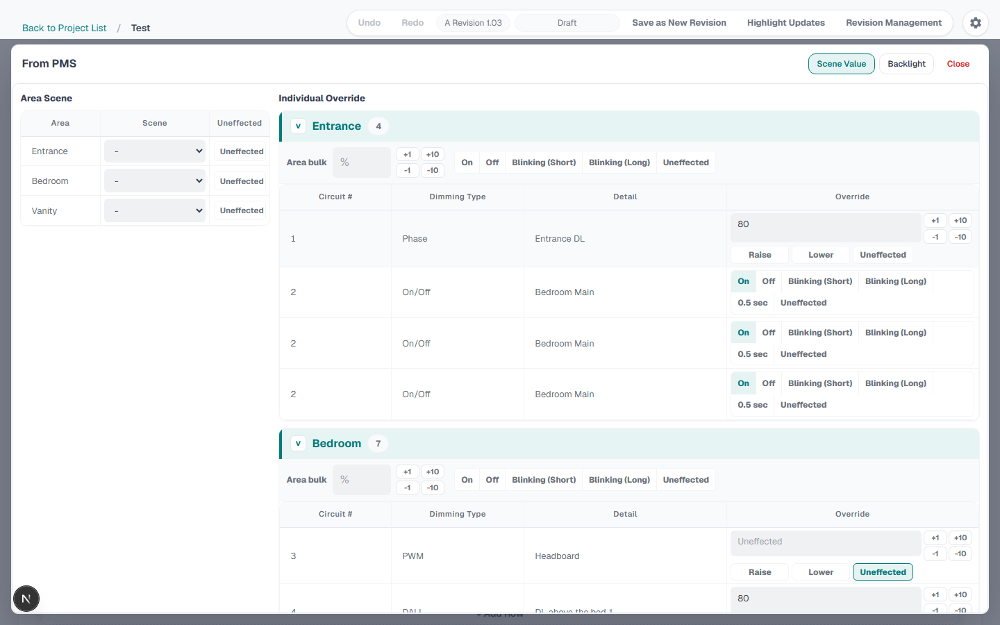
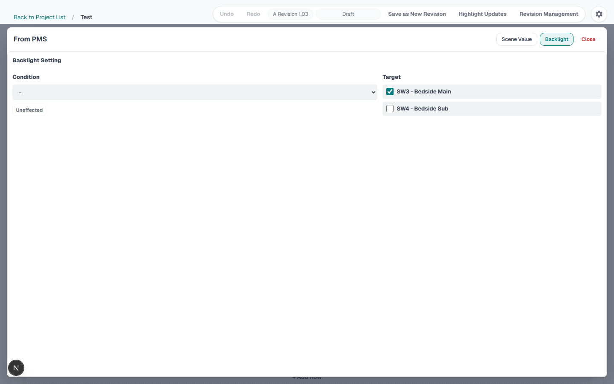
13. Switch / PIR / QSM
Switchタブは、CCI、Palladiom、Pico、PIR、QSMを登録する画面です。 Switchで登録した内容は、Scene、Command、Backlight、CFSの列に影響します。
CCI / Palladiom / Pico
- CCIはQSE-IOやQSE-CI-WCIなどの入力デバイスとCCI番号を紐づけます。
- PalladiomはM1/M2/M3/M4などのボタン番号を持つスイッチです。
- Picoはリモコン/スイッチとして登録します。
- CopyアイコンはFunction単位ではなく、スイッチ単位でコピーします。
- Trigger ConditionはTrigger Master候補から選べ、自由入力もできます。
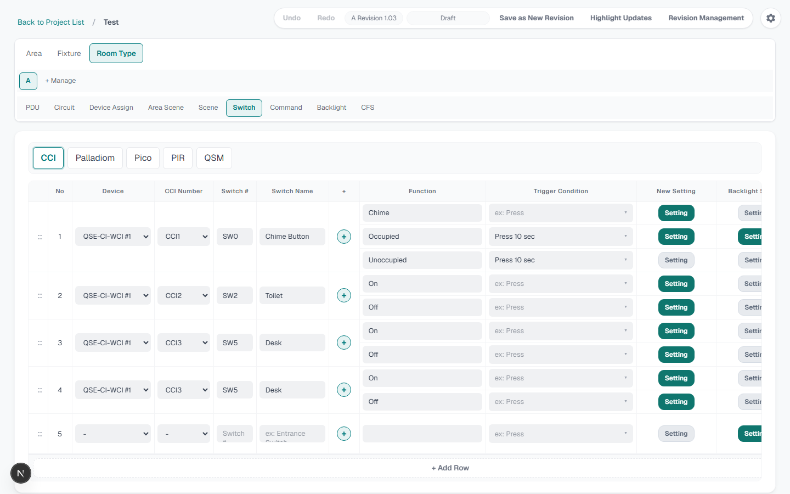
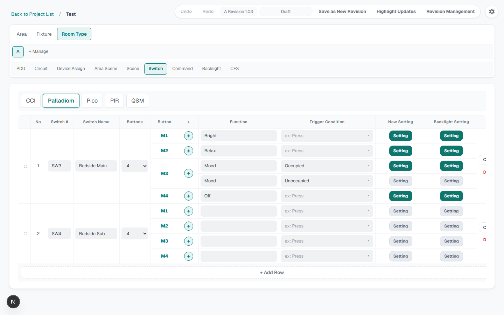
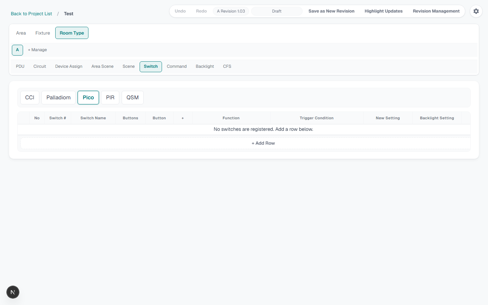
PIR
PIRは、まず上部のPIR RegistrationでAreaごとの数量を登録します。 その後、下部のロジック表で登録済みPIRの中から、どのPIRがシーンやロジックに関係するかを選択します。
- PIRはArea Sceneに出ていないAreaにも存在する可能性があるため、すべてのAreaから登録できます。
- 登録PIRは
PIR1、PIR2のような通し番号を持ち、Location列で場所を確認できます。 - ロジック表では複数PIRを選択できます。CFSではPIR番号とLocationを表示します。
- 複数PIRが絡む場合は、CFSでsummaryと展開UIにより確認します。
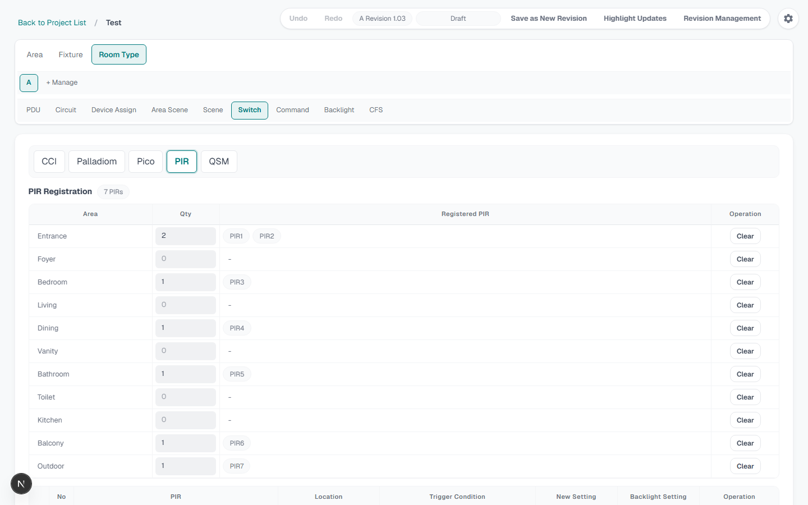
QSM
QSMはPIRに紐づくレシーバーです。PIR 1台につき必ず1台のQSMに割り当てます。 片方のQSMにPIRを割り当てると、他方のQSMからは自動的に外れます。
- PIRは複数QSMへ同時割当できません。
- すべてのPIRはいずれか1台のQSMへ割り当てられている必要があります。
- QSM行は追加/削除できます。
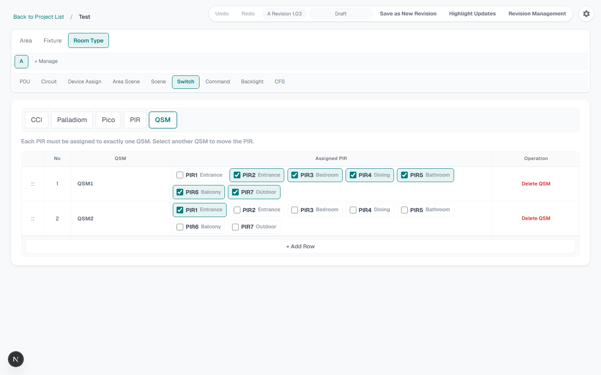
14. Command
Commandタブは、スイッチ入力からコマンドを呼び出すための画面です。 Switch #、Switch Name、Button、Trigger Condition、Settingを登録します。
- CommandのSwitch選択肢にはPIRを表示しません。Commandはスイッチ系の操作に限定します。
- Switch #の選択肢に不明なIDが出ないよう、Switch登録内容を元に表示します。
- 文字が長い場合でも、CFSではスイッチ番号、名前、条件を分けて表示し、スラッシュが残らないようにしています。
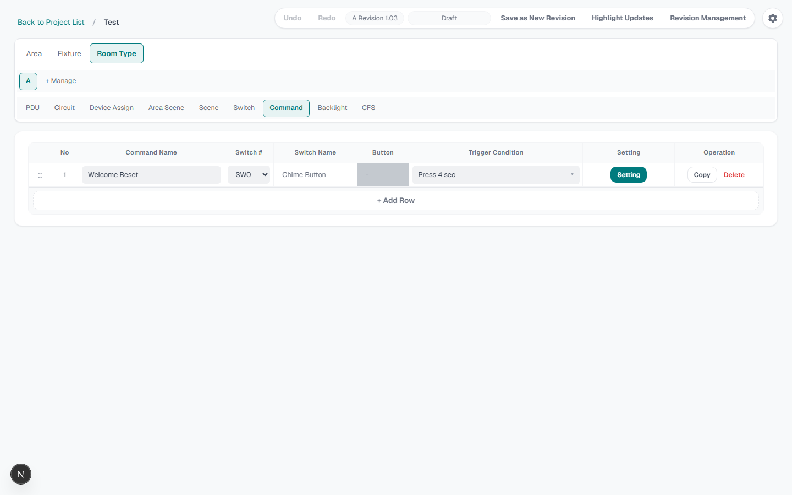
15. Backlight
Backlightタブは、スイッチのバックライト条件と対象を登録する画面です。 SceneタブやSwitchタブのBacklight Settingと同じ考え方で、共通UIとして扱います。
- 複数のPalladiomがある場合も、対象が1つに潰れないようにそれぞれ登録します。
- SettingにはClear機能があり、不要な設定を削除できます。
- CFSのBacklight Logicは、HVACより下に表示され、同じスイッチで重複行を増やさないようにします。
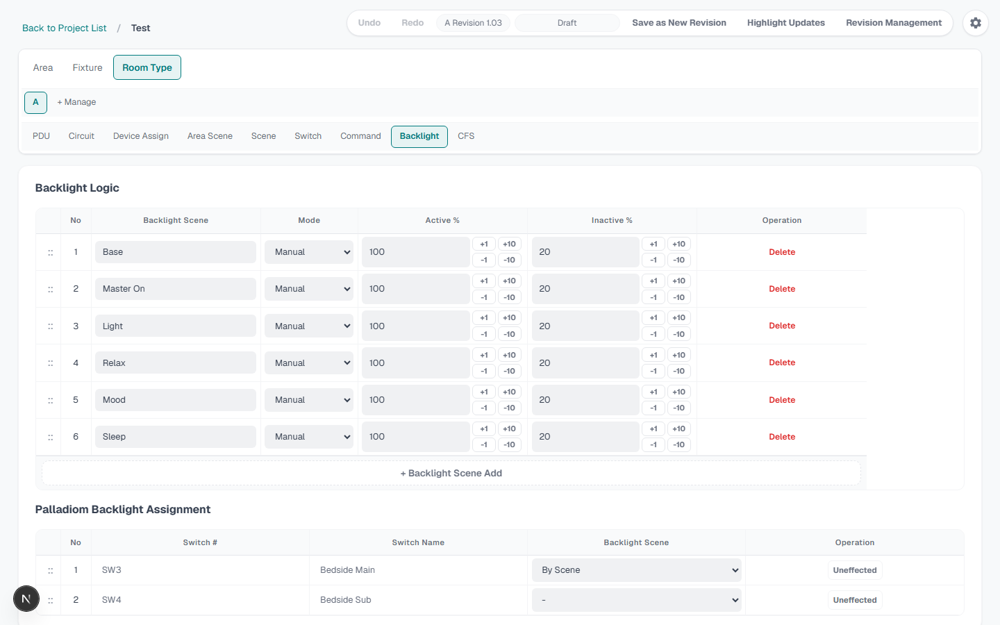
16. CFS
CFSタブは、このアプリの最終確認画面です。Circuit、Device Assign、Area Scene、Scene、Switch、Command、Backlight、HVACの情報を統合し、 Excel Exportできる表として表示します。
表示切替
Areas: 表示するAreaを絞り込みます。Devices: 表示するデバイスを絞り込みます。Base Columns: Device、Device #、Type、Group、Zone/Addressなどの基本列を切り替えます。Function Columns: Scene、Command、Switch、PIR、Backlight Logicなどの機能列を切り替えます。Display: 番号表示、Area Scene名表示、Area Scene由来の値表示などを切り替えます。Highlights: Area Sceneの色や変更ハイライトを切り替えます。Maximize: CFS確認時に上部UIを一部隠し、表の表示領域を広げます。Excel Export: 現在のCFSをExcel形式で出力します。
値の優先順位
CFSでは、Area Sceneで呼び出された値をベースとして表示し、Individual Overrideが設定されている場合はIndividual Overrideを優先します。 Area Scene名を表示するか、具体値を表示するかはDisplayで切り替えます。
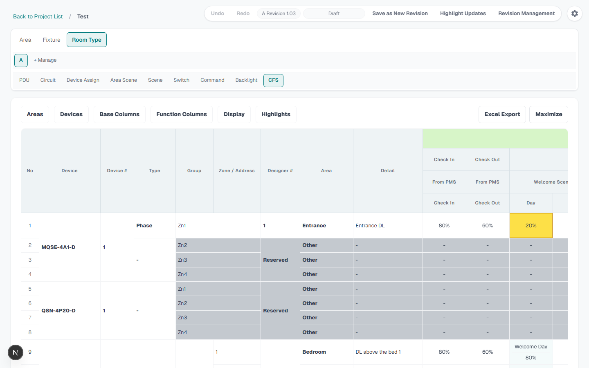
17. Settings
Settingsはアプリ全体に効く共通マスターです。右上のギアボタンから移動できます。 プロジェクトごとの入力ではなく、全体の選択肢や計算マスターを管理します。
Device Master
- Device model、control、abbrev、lowEnd、highEnd、addressMode、PDU、VAなどを管理します。
- PDU/VAはPDUタブの計算に使われます。
- Device Assignに出せるデバイスと、Switch/PDU専用デバイスは用途が異なります。
- 必要な場合はデバイスを追加できます。
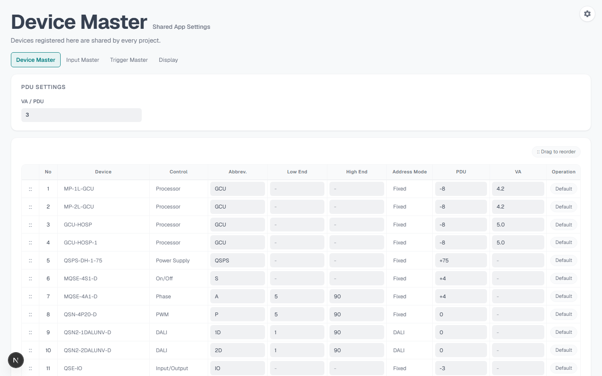
Input Master / Trigger Master / Display
- Input MasterはCCI/Input系のDetailや入力候補に使います。
- Trigger MasterはScene、Switch、CommandなどのTrigger Condition候補に使います。自由入力も可能です。
- Displayは表示倍率などの画面表示設定です。
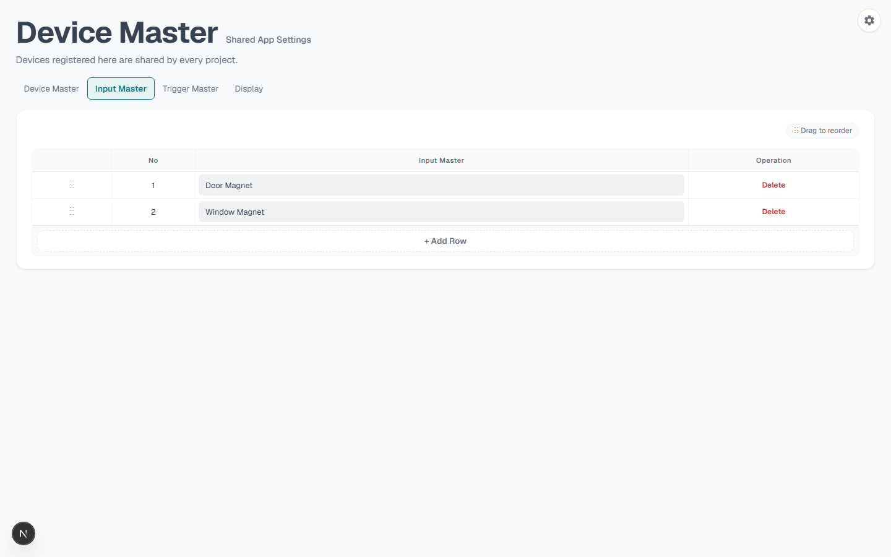
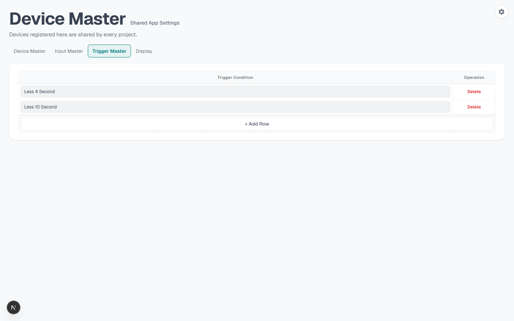
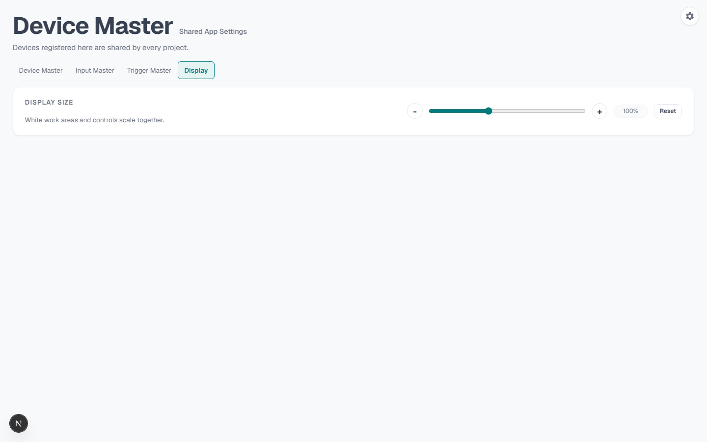
18. Revision
Room TypeごとにRevisionを管理できます。作業中はDraftとして保存され、区切りのよいタイミングで
Save as New Revision を押してRevisionを作成します。
Undo/Redo: 直近の編集を戻す/やり直す操作です。Save as New Revision: 現在のDraftを新しいRevisionとして保存します。Highlight Updates: 前Revisionとの差分を画面上で強調します。Revision Management: Revision一覧、更新内容、Restoreを確認します。
更新内容は、タブごとに、どの項目が変わったか分かるように記載されます。 レビュー時はこの画面で変更内容を確認してからCFS出力へ進みます。
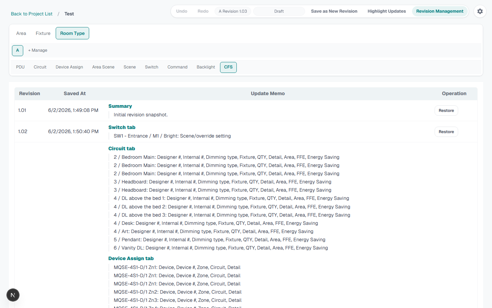
20. 完成前チェック
CFSを提出・共有する前に、次を確認してください。
| 分類 | 確認内容 |
|---|---|
| Project / Master | Area、Fixture、Room Type、Device Master、Trigger Masterが最新である。 |
| PDU | Total PDUが不足していない。DALIを含める/除外する状態が意図通りである。Combined VAとBreakerが確認済みである。 |
| Circuit | Designer #、Dimming Type、Area、Fixture、pcs、Detailが正しい。Reserved行が不要に表示されていない。 |
| Device Assign / HVAC | 回路とデバイス、ゾーン/アドレス、HVAC Master/Slave、季節スケジュールが正しい。 |
| Scene | Area SceneとIndividual Overrideの使い分けが正しい。Uneffectedにすべき箇所が値入りになっていない。 |
| Switch / PIR / QSM | Switch #、Button、Trigger Condition、PIR登録、QSM割当が正しい。PIRは必ず1台のQSMに割当済みである。 |
| Command / Backlight | Commandに不要なPIRが出ていない。Backlight LogicがCFSで重複していない。 |
| CFS | 必要な列が表示されている。Area Scene名/値表示、Highlights、Maximize、Excel Exportを確認済みである。 |
| Revision | Save as New Revisionを行い、Revision Managementで更新内容が確認できる。 |